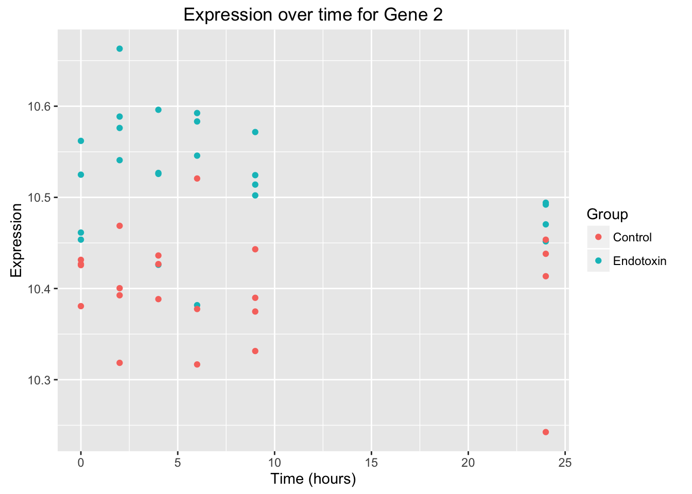
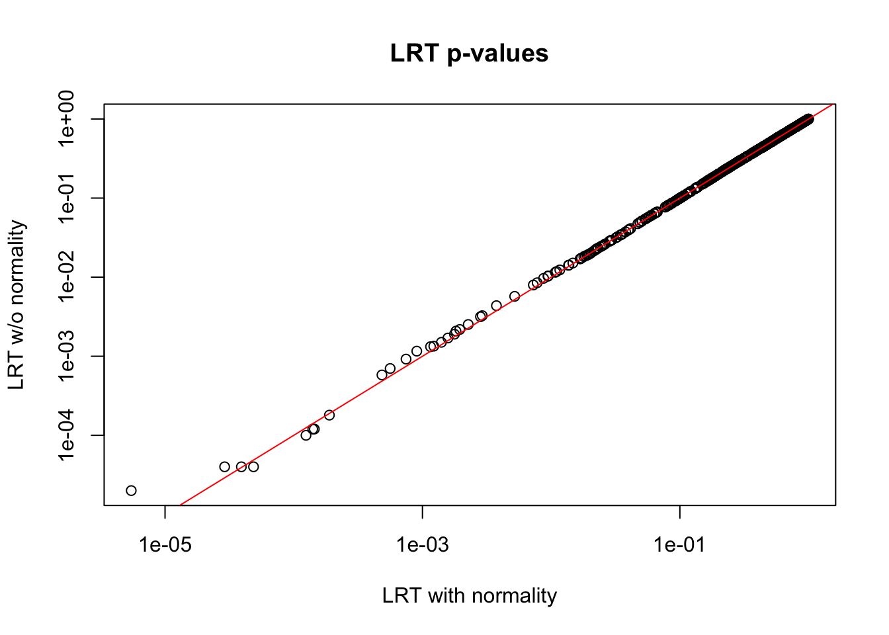

edge_time_series_example
Lauren Blake
July 21, 2016
Last updated: 2016-08-16
Code version: 82630628602bb0e81698b89cdd0182c6a927301e
Introduction
This file is going through the case study for a longitudinal time course experiment. The analysis will be performed using the R package edge from Storey et al. 2005.
In this endotoxin data set, blood samples were collected from 4 individuals that were given endotoxin and from 4 individuals that were given a placebo. Blood samples were collected before infusion and after 2, 4, 6, 9, and 24 hours. The leukocytes were isolated from the blood samples. The goal is to identify genes that show “between-class temporal differential expression”.
Finding the endotoxin data
# Load time series data package R
# source("https://bioconductor.org/biocLite.R")
# biocLite("edge")
library("edge")
library("ggplot2")
library("splines")
# Import the data
data(endotoxin)
# Look at the different components of the data
head(endotoxin$class) # Stating whether control or endotoxin[1] endotoxin endotoxin endotoxin endotoxin endotoxin endotoxin
Levels: control endotoxinhead(endotoxin$endoexpr) # This is a data frame of expression. The columns correspond to time points 1-6 for each person. For example, columns 1-6 are for individual 1 at time points 0, 2, 4, 6, and 24 hours. The rows correspond to the gene expression for 500 genes [,1] [,2] [,3] [,4] [,5] [,6] [,7]
[1,] 10.592501 7.771067 6.606650 10.599929 10.533349 10.592777 10.578420
[2,] 10.453630 10.540805 10.494131 10.596085 10.592501 10.571650 10.561966
[3,] 9.521861 9.305923 9.657011 9.648079 9.737374 9.591513 9.718302
[4,] 10.124108 10.362430 10.291162 10.642014 10.587241 10.574133 10.221323
[5,] 10.592978 10.678030 10.623666 10.681573 10.625441 10.642229 10.585902
[6,] 10.524978 10.551847 10.590893 10.598807 10.597409 10.652282 10.599979
[,8] [,9] [,10] [,11] [,12] [,13] [,14]
[1,] 10.576993 10.623739 10.619741 10.600203 10.597734 10.525004 10.467977
[2,] 10.663101 10.470391 10.426024 10.583271 10.502159 10.461388 10.588628
[3,] 9.665865 9.418005 9.208739 9.468388 9.460398 9.611998 9.645882
[4,] 10.250829 10.323743 10.608341 10.650578 10.561655 10.308086 10.305848
[5,] 10.636600 10.638880 10.648919 10.611400 10.633232 10.627067 10.643041
[6,] 10.613271 10.595234 10.538555 10.581927 10.583043 10.625198 10.632894
[,15] [,16] [,17] [,18] [,19] [,20] [,21]
[1,] 10.405837 10.511567 10.542152 10.47858 10.523661 10.60597 10.490885
[2,] 10.492079 10.526802 10.545762 10.51401 10.524897 10.57613 10.451725
[3,] 9.640368 9.441135 9.648531 9.45548 9.485165 9.52712 9.691964
[4,] 10.322560 10.549307 10.659163 10.54115 10.175954 10.32351 10.274327
[5,] 10.628787 10.674452 10.668188 10.66045 10.493078 10.63809 10.657753
[6,] 10.582967 10.646282 10.593028 10.62333 10.559037 10.59064 10.590793
[,22] [,23] [,24] [,25] [,26] [,27] [,28]
[1,] 10.583853 10.553571 10.561008 10.380374 10.381025 10.398336 10.456970
[2,] 10.525729 10.381738 10.524360 10.426795 10.400377 10.413493 10.436231
[3,] 9.396737 9.367259 9.351753 9.871584 9.683277 9.808902 9.777754
[4,] 10.621620 10.647257 10.503066 10.298262 10.277221 10.249945 10.389979
[5,] 10.643256 10.681229 10.640005 10.662142 10.556568 10.596810 10.607451
[6,] 10.608020 10.577121 10.558102 10.539482 10.597834 10.521399 10.554666
[,29] [,30] [,31] [,32] [,33] [,34] [,35]
[1,] 10.399189 10.361419 10.408074 10.466839 10.324399 10.440478 10.419301
[2,] 10.316722 10.389826 10.425668 10.318474 10.242528 10.331431 10.431465
[3,] 9.677904 9.698859 9.897721 9.644846 9.566475 9.655731 9.344084
[4,] 10.391822 10.437346 10.369703 10.337994 10.173324 10.236776 10.223213
[5,] 10.598059 10.605347 10.581800 10.576560 10.584081 10.658365 10.641799
[6,] 10.506683 10.554849 10.622814 10.531749 10.492773 10.547970 10.471043
[,36] [,37] [,38] [,39] [,40] [,41] [,42]
[1,] 10.496759 10.372147 10.480241 10.523338 10.486680 10.463046 10.554953
[2,] 10.392589 10.453572 10.388380 10.377514 10.374772 10.380684 10.468801
[3,] 9.522666 9.511333 9.357984 9.494466 9.362718 9.194109 9.540076
[4,] 10.279661 10.231207 10.289532 10.353607 10.227200 10.277187 10.443396
[5,] 10.667047 10.633256 10.677685 10.675076 10.680286 10.585599 3.218876
[6,] 10.546683 10.495377 10.494464 10.508268 10.537389 10.524306 10.532176
[,43] [,44] [,45] [,46]
[1,] 10.41547 10.421299 10.533988 10.493411
[2,] 10.43811 10.426825 10.520698 10.443076
[3,] 9.46916 9.391077 9.660078 9.257701
[4,] 10.31907 10.342484 10.331073 10.468659
[5,] 10.61893 10.602865 10.437522 6.455199
[6,] 10.54395 10.510668 10.554171 10.506901head(endotoxin$ind) # Individuals 1-8[1] 1 1 1 1 1 1head(endotoxin$time) # Time points for each of the individuals[1] 0 2 24 4 6 9# Rearrange endotoxin so it is easier to work with when plotting
endotoxin_class <- rbind(endotoxin$ind, endotoxin$time, endotoxin$class, endotoxin$endoexpr)
endotoxin_class <- as.data.frame(endotoxin_class)
endotoxin_class_plot <- t(endotoxin_class)
endotoxin_class_plot <- as.data.frame(endotoxin_class_plot)
# At this point, I will save endotoxin_class_plot as a .txt file. This allows us to use the same data in other files. We only need to run this once to then just save in the /data folder.
# endotoxin_data <- write.table(endotoxin_class_plot, "~/diffTimeExpression/data/endotoxin_data.txt", sep="\t")
# In endotoxin_class, the first column is individual, the second is time, the third is endotoxin status (2 = endotoxin, 1 = control), and columns 4-503 is genes 1-500.
endoexpr <- endotoxin$endoexpr
class <- endotoxin$class
ind <- endotoxin$ind
time <- endotoxin$timePlot for one gene
# Create a graph for the second gene. Note: The expression values from the second gene has endotoxin_class_plot$V5 because the first 3 columns are not expression values. Therefore 3 columns + gene 2 = endotoxin_class_plot$V5
ggplot(data = endotoxin_class_plot, aes(y = endotoxin_class_plot$V5, x = endotoxin_class_plot$V2)) + geom_point(aes(color = factor(endotoxin_class_plot$V3, labels = c("Control", "Endotoxin")))) + labs(x = "Time (hours)", y = "Expression", title = "Expression over time for Gene 2") + scale_color_discrete(name = "Group") 
# Create a graph for gene 108
ggplot(data = endotoxin_class_plot, aes(y = endotoxin_class_plot$V111, x = endotoxin_class_plot$V2)) + geom_point(aes(color = factor(endotoxin_class_plot$V3, labels = c("Control", "Endotoxin")))) + labs(x = "Time (hours)", y = "Expression", title = "Expression over time for Gene 108") + scale_color_discrete(name = "Group")# Create a graph for gene 1
ggplot(data = endotoxin_class_plot, aes(y = endotoxin_class_plot$V4, x = endotoxin_class_plot$V2)) + geom_point(aes(color = factor(endotoxin_class_plot$V3, labels = c("Control", "Endotoxin")))) + labs(x = "Time (hours)", y = "Expression", title = "Expression over time for Gene 108") + scale_color_discrete(name = "Group")Creating the deSet object that is needed for the full and null models
To use the command “build_study” to make the full and null model
- grp is for the group (endotoxin or control)
- tme is for time (hours 0, 2, 4, 6, 9, and 24)
- ind is for the sample name (ind 1-8)
- sampling is for the type of experiment (timecourse)
Here, we are going to create the null model and then the full model. The null model uses the data from both groups to generate the B-spline basis matrix for a natural cubic spline. The full model will generate separate B-spline basis matrices (each for a natural cubic spline) for the endotoxin and control groups.
# Make a covariance matrix
cov <- data.frame(ind = ind, tme = time, grp = class)
head(cov) ind tme grp
1 1 0 endotoxin
2 1 2 endotoxin
3 1 24 endotoxin
4 1 4 endotoxin
5 1 6 endotoxin
6 1 9 endotoxin# Null model: make the basis matrix for natural cubic splines
null_model <- ~grp + ns(tme, df = 2, intercept = FALSE)
# Full model: make the basis matrix for natural cubic splines
full_model <- ~grp + ns(tme, df = 2, intercept = FALSE) + (grp):ns(tme, df = 2, intercept = FALSE)The command build_models is a deSet object that stores the relevant experimental data. We are going to give it the expression data, the covariance matrix, the full model, and the null model.
This is the different parts of the de_obj (created with the build_models command):
- Null.model- the null model with the adjustment variables (covariates) in the experiment
Null.matrix- the null model in the matrix form
- Full.model- the full model with the adjustment variables AND the biological variables of interest
Full.matrix- the full model in the matrix form
- Ind- contains the individuals
qvalueObj- contains p-values, q-values, and local false discovery rates for the significance of analysis
de_obj <- build_models(data = endoexpr, cov = cov, full.model = full_model, null.model = null_model)
slotNames(de_obj) [1] "null.model" "full.model" "null.matrix"
[4] "full.matrix" "individual" "qvalueObj"
[7] "experimentData" "assayData" "phenoData"
[10] "featureData" "annotation" "protocolData"
[13] ".__classVersion__"summary(de_obj)
ExpressionSet Summary
ExpressionSet (storageMode: lockedEnvironment)
assayData: 500 features, 46 samples
element names: exprs
protocolData: none
phenoData
sampleNames: 1 2 ... 46 (46 total)
varLabels: ind tme grp
varMetadata: labelDescription
featureData: none
experimentData: use 'experimentData(object)'
Annotation:
de Analysis Summary
Total number of arrays: 46
Total number of probes: 500
Biological variables:
Null Model:~grp + ns(tme, df = 2, intercept = FALSE)
Full Model:~grp + ns(tme, df = 2, intercept = FALSE) + (grp):ns(tme, df = 2,
intercept = FALSE)
.......
# Extract different parts of de_obj (from build_models)
# Access the expression values
head(exprs(de_obj)) 1 2 3 4 5 6 7
1 10.592501 7.771067 6.606650 10.599929 10.533349 10.592777 10.578420
2 10.453630 10.540805 10.494131 10.596085 10.592501 10.571650 10.561966
3 9.521861 9.305923 9.657011 9.648079 9.737374 9.591513 9.718302
4 10.124108 10.362430 10.291162 10.642014 10.587241 10.574133 10.221323
5 10.592978 10.678030 10.623666 10.681573 10.625441 10.642229 10.585902
6 10.524978 10.551847 10.590893 10.598807 10.597409 10.652282 10.599979
8 9 10 11 12 13 14
1 10.576993 10.623739 10.619741 10.600203 10.597734 10.525004 10.467977
2 10.663101 10.470391 10.426024 10.583271 10.502159 10.461388 10.588628
3 9.665865 9.418005 9.208739 9.468388 9.460398 9.611998 9.645882
4 10.250829 10.323743 10.608341 10.650578 10.561655 10.308086 10.305848
5 10.636600 10.638880 10.648919 10.611400 10.633232 10.627067 10.643041
6 10.613271 10.595234 10.538555 10.581927 10.583043 10.625198 10.632894
15 16 17 18 19 20 21
1 10.405837 10.511567 10.542152 10.47858 10.523661 10.60597 10.490885
2 10.492079 10.526802 10.545762 10.51401 10.524897 10.57613 10.451725
3 9.640368 9.441135 9.648531 9.45548 9.485165 9.52712 9.691964
4 10.322560 10.549307 10.659163 10.54115 10.175954 10.32351 10.274327
5 10.628787 10.674452 10.668188 10.66045 10.493078 10.63809 10.657753
6 10.582967 10.646282 10.593028 10.62333 10.559037 10.59064 10.590793
22 23 24 25 26 27 28
1 10.583853 10.553571 10.561008 10.380374 10.381025 10.398336 10.456970
2 10.525729 10.381738 10.524360 10.426795 10.400377 10.413493 10.436231
3 9.396737 9.367259 9.351753 9.871584 9.683277 9.808902 9.777754
4 10.621620 10.647257 10.503066 10.298262 10.277221 10.249945 10.389979
5 10.643256 10.681229 10.640005 10.662142 10.556568 10.596810 10.607451
6 10.608020 10.577121 10.558102 10.539482 10.597834 10.521399 10.554666
29 30 31 32 33 34 35
1 10.399189 10.361419 10.408074 10.466839 10.324399 10.440478 10.419301
2 10.316722 10.389826 10.425668 10.318474 10.242528 10.331431 10.431465
3 9.677904 9.698859 9.897721 9.644846 9.566475 9.655731 9.344084
4 10.391822 10.437346 10.369703 10.337994 10.173324 10.236776 10.223213
5 10.598059 10.605347 10.581800 10.576560 10.584081 10.658365 10.641799
6 10.506683 10.554849 10.622814 10.531749 10.492773 10.547970 10.471043
36 37 38 39 40 41 42
1 10.496759 10.372147 10.480241 10.523338 10.486680 10.463046 10.554953
2 10.392589 10.453572 10.388380 10.377514 10.374772 10.380684 10.468801
3 9.522666 9.511333 9.357984 9.494466 9.362718 9.194109 9.540076
4 10.279661 10.231207 10.289532 10.353607 10.227200 10.277187 10.443396
5 10.667047 10.633256 10.677685 10.675076 10.680286 10.585599 3.218876
6 10.546683 10.495377 10.494464 10.508268 10.537389 10.524306 10.532176
43 44 45 46
1 10.41547 10.421299 10.533988 10.493411
2 10.43811 10.426825 10.520698 10.443076
3 9.46916 9.391077 9.660078 9.257701
4 10.31907 10.342484 10.331073 10.468659
5 10.61893 10.602865 10.437522 6.455199
6 10.54395 10.510668 10.554171 10.506901# Access the covariates
head(pData(de_obj)) ind tme grp
1 1 0 endotoxin
2 1 2 endotoxin
3 1 24 endotoxin
4 1 4 endotoxin
5 1 6 endotoxin
6 1 9 endotoxin# Access the matrix for the null model
head(nullMatrix(de_obj)) [,1] [,2] [,3] [,4]
1 1 1 0.0000000 0.00000000
2 1 1 0.1637410 -0.08983995
3 1 1 0.2743210 0.84689059
4 1 1 0.3114577 -0.16143374
5 1 1 0.4275473 -0.19701537
6 1 1 0.5324712 -0.17158121# Access the matrix for the full model
head(fullMatrix(de_obj)) [,1] [,2] [,3] [,4] [,5] [,6]
1 1 1 0.0000000 0.00000000 0.0000000 0.00000000
2 1 1 0.1637410 -0.08983995 0.1637410 -0.08983995
3 1 1 0.2743210 0.84689059 0.2743210 0.84689059
4 1 1 0.3114577 -0.16143374 0.3114577 -0.16143374
5 1 1 0.4275473 -0.19701537 0.4275473 -0.19701537
6 1 1 0.5324712 -0.17158121 0.5324712 -0.17158121Fit the data
We are going to fit each of the models using least squares. From this, we are going to get the following information:
fit.full/fit.null- fitted values from the full/null models
res.fill/res.null- residuals from the full/null model
dH.full- diagonal elements in the projection matrix for the full model
beta.coef- the coefficients for the full model
stat.type- the statistic type used (either the likelihood ratio test or the optimal discovery procedure). I will talk about the different statistics in the next section.
# Fit the null and full models
ef_obj <- fit_models(de_obj, stat.type = "lrt")
# Look at the data
summary(ef_obj)
deFit Summary
fit.full:
1 2 3 4 5 6 7 8 9 10 11 12
1 10.26 10.37 9.54 10.46 10.51 10.51 10.26 10.37 9.54 10.46 10.51 10.51
2 10.53 10.53 10.48 10.53 10.53 10.53 10.53 10.53 10.48 10.53 10.53 10.53
3 9.57 9.53 9.60 9.51 9.49 9.47 9.57 9.53 9.60 9.51 9.49 9.47
13 14 15 16 17 18 19 20 21 22 23 24
1 10.26 10.37 9.54 10.46 10.51 10.51 10.26 10.37 9.54 10.46 10.51 10.51
2 10.53 10.53 10.48 10.53 10.53 10.53 10.53 10.53 10.48 10.53 10.53 10.53
3 9.57 9.53 9.60 9.51 9.49 9.47 9.57 9.53 9.60 9.51 9.49 9.47
25 26 27 28 29 30 31 32 33 34 35 36
1 10.44 10.45 10.38 10.46 10.46 10.46 10.44 10.45 10.38 10.46 10.44 10.45
2 10.41 10.41 10.39 10.40 10.40 10.39 10.41 10.41 10.39 10.39 10.41 10.41
3 9.59 9.57 9.59 9.55 9.54 9.53 9.59 9.57 9.59 9.53 9.59 9.57
37 38 39 40 41 42 43 44 45 46
1 10.38 10.46 10.46 10.46 10.44 10.45 10.38 10.46 10.46 10.46
2 10.39 10.40 10.40 10.39 10.41 10.41 10.39 10.40 10.40 10.39
3 9.59 9.55 9.54 9.53 9.59 9.57 9.59 9.55 9.54 9.53
fit.null:
1 2 3 4 5 6 7 8 9 10 11 12
1 10.26 10.32 9.87 10.37 10.41 10.40 10.26 10.32 9.87 10.37 10.41 10.40
2 10.53 10.53 10.49 10.53 10.53 10.52 10.53 10.53 10.49 10.53 10.53 10.52
3 9.56 9.54 9.58 9.51 9.49 9.48 9.56 9.54 9.58 9.51 9.49 9.48
13 14 15 16 17 18 19 20 21 22 23 24
1 10.26 10.32 9.87 10.37 10.41 10.40 10.26 10.32 9.87 10.37 10.41 10.40
2 10.53 10.53 10.49 10.53 10.53 10.52 10.53 10.53 10.49 10.53 10.53 10.52
3 9.56 9.54 9.58 9.51 9.49 9.48 9.56 9.54 9.58 9.51 9.49 9.48
25 26 27 28 29 30 31 32 33 34 35 36
1 10.4 10.50 10.05 10.55 10.58 10.58 10.4 10.50 10.05 10.58 10.4 10.50
2 10.4 10.41 10.37 10.41 10.40 10.40 10.4 10.41 10.37 10.40 10.4 10.41
3 9.6 9.57 9.61 9.55 9.53 9.52 9.6 9.57 9.61 9.52 9.6 9.57
37 38 39 40 41 42 43 44 45 46
1 10.05 10.55 10.58 10.58 10.4 10.50 10.05 10.55 10.58 10.58
2 10.37 10.41 10.40 10.40 10.4 10.41 10.37 10.41 10.40 10.40
3 9.61 9.55 9.53 9.52 9.6 9.57 9.61 9.55 9.53 9.52
res.full:
1 2 3 4 5 6 7 8 9
1 0.3360 -2.59535 -2.9344 0.1429 0.0238 0.0876 0.3219 0.211 1.08268
2 -0.0791 0.00671 0.0178 0.0613 0.0584 0.0415 0.0293 0.129 -0.00597
3 -0.0435 -0.22766 0.0543 0.1423 0.2516 0.1185 0.1529 0.132 -0.18468
10 11 12 13 14 15 16 17 18
1 0.163 0.0906 0.0926 0.2685 0.1016 0.8648 0.0545 0.0326 -0.0266
2 -0.109 0.0491 -0.0280 -0.0713 0.0545 0.0157 -0.0080 0.0116 -0.0161
3 -0.297 -0.0174 -0.0126 0.0466 0.1123 0.0377 -0.0646 0.1627 -0.0175
19 20 21 22 23 24 25 26
1 0.2671 0.23955 0.9498 0.12682 0.044 0.05585 -0.0574 -0.06806
2 -0.0078 0.04203 -0.0246 -0.00907 -0.152 -0.00579 0.0133 -0.00725
3 -0.0802 -0.00647 0.0893 -0.10905 -0.119 -0.12124 0.2785 0.11155
27 28 29 30 31 32 33 34 35
1 0.0225 -0.00152 -0.0650 -0.10327 -0.0297 0.0178 -0.0514 -0.0242 -0.0185
2 0.0272 0.03407 -0.0808 -0.00247 0.0122 -0.0892 -0.1438 -0.0609 0.0180
3 0.2223 0.22498 0.1394 0.17159 0.3047 0.0731 -0.0202 0.1285 -0.2490
36 37 38 39 40 41 42 43 44
1 0.0477 -0.00368 0.0218 0.0591 0.0220 0.0252 0.1059 0.0396 -0.0372
2 -0.0150 0.06724 -0.0138 -0.0200 -0.0175 -0.0328 0.0612 0.0518 0.0247
3 -0.0491 -0.07531 -0.1948 -0.0440 -0.1645 -0.3989 -0.0316 -0.1175 -0.1617
45 46
1 0.0698 0.0287
2 0.1232 0.0508
3 0.1216 -0.2696
res.null:
1 2 3 4 5 6 7 8 9
1 0.3328 -2.55160 -3.26213 0.2252 0.1279 0.1883 0.3187 0.254 0.7550
2 -0.0812 0.00808 0.00117 0.0656 0.0646 0.0483 0.0271 0.130 -0.0226
3 -0.0406 -0.22981 0.07889 0.1359 0.2425 0.1087 0.1558 0.130 -0.1601
10 11 12 13 14 15 16 17 18
1 0.245 0.1948 0.1933 0.2653 0.1453 0.537058 0.13680 0.1367 0.07413
2 -0.104 0.0554 -0.0212 -0.0734 0.0559 -0.000878 -0.00367 0.0179 -0.00935
3 -0.303 -0.0265 -0.0224 0.0495 0.1102 0.062251 -0.07104 0.1536 -0.02732
19 20 21 22 23 24 25 26
1 0.26395 0.28330 0.6221 0.20909 0.148 0.156556 -0.0573 -0.11959
2 -0.00993 0.04340 -0.0412 -0.00474 -0.146 0.000999 0.0153 -0.00905
3 -0.07731 -0.00861 0.1138 -0.11543 -0.128 -0.131051 0.2759 0.11433
27 28 29 30 31 32 33 34 35
1 0.3516 -0.0957 -0.1842 -0.2210 -0.0296 -0.0338 0.2777 -0.1419 -0.0183
2 0.0438 0.0291 -0.0879 -0.0102 0.0141 -0.0910 -0.1271 -0.0686 0.0199
3 0.1976 0.2324 0.1498 0.1828 0.3020 0.0759 -0.0449 0.1397 -0.2516
36 37 38 39 40 41 42 43 44
1 -0.00385 0.3254 -0.0725 -0.0600 -0.0957 0.0254 0.0543 0.3687 -0.1314
2 -0.01684 0.0839 -0.0188 -0.0271 -0.0253 -0.0308 0.0594 0.0684 0.0197
3 -0.04628 -0.1000 -0.1874 -0.0337 -0.1533 -0.4016 -0.0289 -0.1422 -0.1543
45 46
1 -0.0494 -0.089
2 0.1161 0.043
3 0.1319 -0.258
beta.coef:
[,1] [,2] [,3] [,4] [,5] [,6]
1 10.44 -0.1813 0.0244 -0.0811 0.1520 -0.8208
2 10.41 0.1192 -0.0454 -0.0174 0.0217 -0.0415
3 9.59 -0.0277 -0.1141 0.0294 -0.0302 0.0614
stat.type:
[1] "lrt"# Access the fitted coefficients of the full model
head(betaCoef(ef_obj)) [,1] [,2] [,3] [,4] [,5] [,6]
1 10.437814 -0.18129042 0.02435197 -0.08107760 0.15195724 -0.82084348
2 10.413507 0.11918699 -0.04543788 -0.01736739 0.02170720 -0.04146413
3 9.593041 -0.02768530 -0.11405416 0.02939442 -0.03015807 0.06139895
4 10.303287 -0.06983265 0.06460307 -0.09290461 0.66307082 -0.07165415
5 10.072105 0.53135427 -0.07802490 0.64025079 0.19071392 -0.63954645
6 10.542188 0.04075908 -0.03347217 -0.02239589 0.06668477 0.01997250# Access the full and null residuals
head(resFull(ef_obj)) 1 2 3 4 5
1 0.33597800 -2.595353718 -2.9344098705 0.142892740 0.0237527113
2 -0.07906413 0.006710949 0.0177707650 0.061284127 0.0583623105
3 -0.04349508 -0.227662542 0.0543236771 0.142296046 0.2515630556
4 -0.10934597 -0.004957683 -0.0025448668 0.155355470 0.0102512486
5 -0.01048135 0.056182427 -0.0113027996 0.043129567 -0.0260596996
6 -0.05796909 -0.036756120 0.0008880288 0.005125149 -0.0002146544
6 7 8 9 10 11
1 0.08762182 0.32189664 0.21057229 1.082679013 0.16270416 0.09060731
2 0.04149756 0.02927148 0.12900718 -0.005969472 -0.10877612 0.04913194
3 0.11852396 0.15294578 0.13227890 -0.184682987 -0.29704390 -0.01742324
4 -0.07502098 -0.01213099 -0.11655884 0.030035871 0.12168209 0.07358876
5 -0.02111289 -0.01755706 0.01475242 0.003910843 0.01047522 -0.04010034
6 0.05123504 0.01703245 0.02466792 0.005228499 -0.05512692 -0.01569698
12 13 14 15 16
1 0.09257864 0.26848125 0.10155635 0.864777301 0.054530360
2 -0.02799344 -0.07130658 0.05453386 0.015718970 -0.007998231
3 -0.01259037 0.04664213 0.11229616 0.037680279 -0.064648413
4 -0.08749943 0.07463172 -0.06154007 0.028852789 0.062648393
5 -0.03011039 0.02360753 0.02119316 -0.006181616 0.036008327
6 -0.01800446 0.04225121 0.04429167 -0.007038503 0.052599450
17 18 19 20 21
1 0.03255610 -0.026572574 0.267137526 0.239545256 0.949825196
2 0.01162351 -0.016138942 -0.007797138 0.042031957 -0.024635917
3 0.16271991 -0.017508606 -0.080190971 -0.006465808 0.089276006
4 0.08217392 -0.108005999 -0.057499437 -0.043875106 -0.019380166
5 0.01668713 -0.002887962 -0.110381261 0.016240584 0.022784479
6 -0.00459585 0.022278104 -0.023909986 0.002039141 0.000787448
22 23 24 25 26
1 0.126816838 0.04397459 0.05585207 -0.057439930 -0.06805982
2 -0.009071135 -0.15240056 -0.00579295 0.013287783 -0.00725090
3 -0.109046047 -0.11855223 -0.12123570 0.278542595 0.11155192
4 0.134961130 0.07026705 -0.14608891 -0.005024154 -0.04499010
5 0.004812317 0.02972808 -0.02333673 0.590036398 0.55475850
6 0.014337455 -0.02050352 -0.04294546 -0.002705411 0.05911512
27 28 29 30 31
1 0.022506195 -0.001516605 -0.06500939 -0.103273135 -0.02973987
2 0.027158513 0.034072335 -0.08077957 -0.002466935 0.01216129
3 0.222254295 0.224981133 0.13941681 0.171591705 0.30467955
4 0.007616999 0.051573893 0.04261109 0.083719373 0.06641622
5 0.003886082 0.663005426 0.68545217 0.684642552 0.50969511
6 0.007360580 0.019288349 -0.02560634 0.026641373 0.08062643
32 33 34 35 36
1 0.017754164 -0.051430617 -0.02421386 -0.01851291 0.047674101
2 -0.089153554 -0.143806410 -0.06086129 0.01795806 -0.015038507
3 0.073121078 -0.020172645 0.12846374 -0.24895717 -0.049058995
4 0.015782267 -0.069004649 -0.11685035 -0.08007334 -0.042550107
5 0.574750410 -0.008842369 0.73766050 0.56969415 0.665237439
6 -0.006969405 -0.021265529 0.01976220 -0.07114445 0.007963754
37 38 39 40 41
1 -0.003683498 0.02175447 0.059139196 0.021988613 0.02523257
2 0.067238023 -0.01377908 -0.019987643 -0.017521116 -0.03282317
3 -0.075314357 -0.19478890 -0.044020583 -0.164549278 -0.39893205
4 -0.011121169 -0.04887365 0.004396252 -0.126426344 -0.02609979
5 0.040332281 0.73323903 0.762469607 0.759582184 0.51349393
6 -0.018661721 -0.04091433 -0.024021118 0.009181489 -0.01788167
42 43 44 45 46
1 0.105867947 0.03964248 -0.037188170 0.06978898 0.02871909
2 0.061173951 0.05177350 0.024665705 0.12319620 0.05078282
3 -0.031649590 -0.11748792 -0.161695774 0.12159081 -0.26956639
4 0.121184874 0.07673951 0.004078538 -0.01813819 0.11503280
5 -6.782933334 0.02601060 0.658419683 0.52491521 -3.46550556
6 -0.006542681 0.02990711 -0.024709635 0.02188176 -0.02130589head(resNull(ef_obj)) 1 2 3 4 5 6
1 0.33279477 -2.551603543 -3.262129563 0.225161744 0.127932837 0.18832543
2 -0.08119764 0.008077674 0.001173755 0.065615868 0.064602698 0.04828923
3 -0.04061496 -0.229805671 0.078894054 0.135906626 0.242460819 0.10870825
4 -0.20098323 -0.040191763 -0.033123614 0.170687795 0.064630030 0.01271800
5 -0.02312918 0.085923291 -0.266859470 0.108135211 0.060150363 0.06613505
6 -0.06778700 -0.042050584 0.008648514 0.004006239 0.002155354 0.05733584
7 8 9 10 11
1 0.318713413 0.25432246 0.7549593200 0.24497317 0.19478743
2 0.027137966 0.13037391 -0.0225664823 -0.10444438 0.05537233
3 0.155825905 0.13013577 -0.1601126105 -0.30343332 -0.02652548
4 -0.103768243 -0.15179292 -0.0005428757 0.13701442 0.12796754
5 -0.030204893 0.04449328 -0.2516458272 0.07548087 0.04610972
6 0.007214531 0.01937345 0.0129889837 -0.05624583 -0.01332698
12 13 14 15 16
1 0.1932822554 0.26529803 0.14530653 0.5370576085 0.136799364
2 -0.0212017685 -0.07344010 0.05590059 -0.0008780401 -0.003666491
3 -0.0224060827 0.04952225 0.11015303 0.0622506560 -0.071037832
4 0.0002395448 -0.01700554 -0.09677415 -0.0017259577 0.077980717
5 0.0571375410 0.01095970 0.05093403 -0.2617382858 0.101013971
6 -0.0119036687 0.03243329 0.03899720 0.0007219818 0.051480540
17 18 19 20 21
1 0.136736225 0.074131038 0.263954302 0.283295431 0.622105504
2 0.017863899 -0.009347269 -0.009930653 0.043398683 -0.041232928
3 0.153617669 -0.027324317 -0.077310851 -0.008608938 0.113846383
4 0.136552706 -0.020267020 -0.149136695 -0.079109186 -0.049958913
5 0.102897197 0.084359972 -0.123029095 0.045981447 -0.232772191
6 -0.002225842 0.028378900 -0.033727901 -0.003255323 0.008547933
22 23 24 25 26
1 0.209085842 0.14815472 0.1565556823 -0.057276082 -0.119588743
2 -0.004739395 -0.14616017 0.0009987221 0.015265721 -0.009052217
3 -0.115435467 -0.12765447 -0.1310514136 0.275892418 0.114332690
4 0.150293454 0.12464583 -0.0583499325 0.086207944 -0.012364122
5 0.069817962 0.11593815 0.0639112026 0.600315978 0.518742264
6 0.013218545 -0.01813352 -0.0368446649 0.007170634 0.064389915
27 28 29 30 31
1 0.3516131291 -0.09574061 -0.18416988 -0.22097662 -0.02957602
2 0.0438337980 0.02906094 -0.08787766 -0.01023673 0.01413923
3 0.1975691714 0.23236624 0.14977482 0.18283890 0.30202937
4 0.0386965672 0.03168968 -0.01775187 -0.01103289 0.15764832
5 0.2605658587 0.58829479 0.58704994 0.58353408 0.51997469
6 -0.0003925302 0.02031815 -0.02811837 0.02035532 0.09050248
32 33 34 35 36
1 -0.033774762 0.27767632 -0.14191734 -0.01834906 -0.003854825
2 -0.090954871 -0.12713112 -0.06863108 0.01993600 -0.016839823
3 0.075901844 -0.04485777 0.13971094 -0.25160734 -0.046278230
4 0.048408241 -0.03792508 -0.21160261 0.01115876 -0.009924133
5 0.538734171 0.24783741 0.63655203 0.57997373 0.629221200
6 -0.001694613 -0.02901864 0.01347615 -0.06126840 0.013238546
37 38 39 40 41
1 0.32542344 -0.07246954 -0.06002130 -0.095714868 0.025396421
2 0.08391331 -0.01879047 -0.02708573 -0.025290915 -0.030845232
3 -0.09999948 -0.18740379 -0.03366258 -0.153302078 -0.401582226
4 0.01995840 -0.06875786 -0.05596671 -0.221178602 0.065132313
5 0.29701206 0.65852839 0.66406738 0.658473714 0.523773506
6 -0.02641483 -0.03988453 -0.02653315 0.002895435 -0.008005621
42 43 44 45 46
1 0.05433902 0.36874941 -0.13141218 -0.04937151 -0.08898439
2 0.05937263 0.06844878 0.01965431 0.11609811 0.04301302
3 -0.02886882 -0.14217304 -0.15431067 0.13194881 -0.25831919
4 0.15381085 0.10781908 -0.01580568 -0.07850115 0.02028055
5 -6.81894957 0.28269038 0.58370905 0.42651298 -3.56661403
6 -0.00126789 0.02215400 -0.02367983 0.01936972 -0.02759194# Access the fitted values
head(fitFull(ef_obj)) 1 2 3 4 5 6 7
1 10.256523 10.366421 9.541060 10.457037 10.509596 10.505155 10.256523
2 10.532694 10.534094 10.476360 10.534800 10.534139 10.530153 10.532694
3 9.565356 9.533586 9.602688 9.505783 9.485811 9.472989 9.565356
4 10.233454 10.367388 10.293707 10.486659 10.576989 10.649154 10.233454
5 10.603459 10.621848 10.634969 10.638444 10.651501 10.663342 10.603459
6 10.582947 10.588603 10.590005 10.593682 10.597624 10.601047 10.582947
8 9 10 11 12 13 14
1 10.366421 9.541060 10.457037 10.509596 10.505155 10.256523 10.366421
2 10.534094 10.476360 10.534800 10.534139 10.530153 10.532694 10.534094
3 9.533586 9.602688 9.505783 9.485811 9.472989 9.565356 9.533586
4 10.367388 10.293707 10.486659 10.576989 10.649154 10.233454 10.367388
5 10.621848 10.634969 10.638444 10.651501 10.663342 10.603459 10.621848
6 10.588603 10.590005 10.593682 10.597624 10.601047 10.582947 10.588603
15 16 17 18 19 20 21
1 9.541060 10.457037 10.509596 10.505155 10.256523 10.366421 9.541060
2 10.476360 10.534800 10.534139 10.530153 10.532694 10.534094 10.476360
3 9.602688 9.505783 9.485811 9.472989 9.565356 9.533586 9.602688
4 10.293707 10.486659 10.576989 10.649154 10.233454 10.367388 10.293707
5 10.634969 10.638444 10.651501 10.663342 10.603459 10.621848 10.634969
6 10.590005 10.593682 10.597624 10.601047 10.582947 10.588603 10.590005
22 23 24 25 26 27 28
1 10.457037 10.509596 10.505155 10.437814 10.449085 10.375830 10.458487
2 10.534800 10.534139 10.530153 10.413507 10.407627 10.386334 10.402159
3 9.505783 9.485811 9.472989 9.593041 9.571725 9.586648 9.552773
4 10.486659 10.576989 10.649154 10.303287 10.322211 10.242328 10.338406
5 10.638444 10.651501 10.663342 10.072105 10.001809 10.592924 9.944446
6 10.593682 10.597624 10.601047 10.542188 10.538719 10.514039 10.535378
29 30 31 32 33 34 35
1 10.464199 10.464692 10.437814 10.449085 10.375830 10.464692 10.437814
2 10.397502 10.392293 10.413507 10.407627 10.386334 10.392293 10.413507
3 9.538487 9.527267 9.593041 9.571725 9.586648 9.527267 9.593041
4 10.349211 10.353627 10.303287 10.322211 10.242328 10.353627 10.303287
5 9.912607 9.920704 10.072105 10.001809 10.592924 9.920704 10.072105
6 10.532289 10.528207 10.542188 10.538719 10.514039 10.528207 10.542188
36 37 38 39 40 41 42
1 10.449085 10.375830 10.458487 10.464199 10.464692 10.437814 10.449085
2 10.407627 10.386334 10.402159 10.397502 10.392293 10.413507 10.407627
3 9.571725 9.586648 9.552773 9.538487 9.527267 9.593041 9.571725
4 10.322211 10.242328 10.338406 10.349211 10.353627 10.303287 10.322211
5 10.001809 10.592924 9.944446 9.912607 9.920704 10.072105 10.001809
6 10.538719 10.514039 10.535378 10.532289 10.528207 10.542188 10.538719
43 44 45 46
1 10.375830 10.458487 10.464199 10.464692
2 10.386334 10.402159 10.397502 10.392293
3 9.586648 9.552773 9.538487 9.527267
4 10.242328 10.338406 10.349211 10.353627
5 10.592924 9.944446 9.912607 9.920704
6 10.514039 10.535378 10.532289 10.528207head(fitNull(ef_obj)) 1 2 3 4 5 6 7
1 10.259706 10.322671 9.868780 10.374768 10.405416 10.404452 10.259706
2 10.534828 10.532727 10.492957 10.530469 10.527899 10.523361 10.534828
3 9.562476 9.535729 9.578117 9.512172 9.494913 9.482805 9.562476
4 10.325091 10.402622 10.324286 10.471327 10.522611 10.561415 10.325091
5 10.616107 10.592107 10.890526 10.573438 10.565290 10.576094 10.616107
6 10.592765 10.593897 10.582245 10.594801 10.595254 10.594946 10.592765
8 9 10 11 12 13 14
1 10.322671 9.868780 10.374768 10.405416 10.404452 10.259706 10.322671
2 10.532727 10.492957 10.530469 10.527899 10.523361 10.534828 10.532727
3 9.535729 9.578117 9.512172 9.494913 9.482805 9.562476 9.535729
4 10.402622 10.324286 10.471327 10.522611 10.561415 10.325091 10.402622
5 10.592107 10.890526 10.573438 10.565290 10.576094 10.616107 10.592107
6 10.593897 10.582245 10.594801 10.595254 10.594946 10.592765 10.593897
15 16 17 18 19 20 21
1 9.868780 10.374768 10.405416 10.404452 10.259706 10.322671 9.868780
2 10.492957 10.530469 10.527899 10.523361 10.534828 10.532727 10.492957
3 9.578117 9.512172 9.494913 9.482805 9.562476 9.535729 9.578117
4 10.324286 10.471327 10.522611 10.561415 10.325091 10.402622 10.324286
5 10.890526 10.573438 10.565290 10.576094 10.616107 10.592107 10.890526
6 10.582245 10.594801 10.595254 10.594946 10.592765 10.593897 10.582245
22 23 24 25 26 27 28
1 10.374768 10.405416 10.404452 10.437650 10.500614 10.046723 10.552711
2 10.530469 10.527899 10.523361 10.411529 10.409429 10.369659 10.407170
3 9.512172 9.494913 9.482805 9.595692 9.568945 9.611333 9.545388
4 10.471327 10.522611 10.561415 10.212054 10.289585 10.211249 10.358290
5 10.573438 10.565290 10.576094 10.061826 10.037825 10.336244 10.019156
6 10.594801 10.595254 10.594946 10.532312 10.533444 10.521792 10.534348
29 30 31 32 33 34 35
1 10.583359 10.58240 10.437650 10.500614 10.046723 10.58240 10.437650
2 10.404600 10.40006 10.411529 10.409429 10.369659 10.40006 10.411529
3 9.528129 9.51602 9.595692 9.568945 9.611333 9.51602 9.595692
4 10.409574 10.44838 10.212054 10.289585 10.211249 10.44838 10.212054
5 10.011009 10.02181 10.061826 10.037825 10.336244 10.02181 10.061826
6 10.534801 10.53449 10.532312 10.533444 10.521792 10.53449 10.532312
36 37 38 39 40 41 42
1 10.500614 10.046723 10.552711 10.583359 10.58240 10.437650 10.500614
2 10.409429 10.369659 10.407170 10.404600 10.40006 10.411529 10.409429
3 9.568945 9.611333 9.545388 9.528129 9.51602 9.595692 9.568945
4 10.289585 10.211249 10.358290 10.409574 10.44838 10.212054 10.289585
5 10.037825 10.336244 10.019156 10.011009 10.02181 10.061826 10.037825
6 10.533444 10.521792 10.534348 10.534801 10.53449 10.532312 10.533444
43 44 45 46
1 10.046723 10.552711 10.583359 10.58240
2 10.369659 10.407170 10.404600 10.40006
3 9.611333 9.545388 9.528129 9.51602
4 10.211249 10.358290 10.409574 10.44838
5 10.336244 10.019156 10.011009 10.02181
6 10.521792 10.534348 10.534801 10.53449Visualization of the null and full models (gene 2)
The goal of this section is to make the graph on page 26 of the edge manual. We will plot the fitted values for the null model and the full model.
Note: for the null model, there is only one set of fitted values for all of the groups (e.g. cases and controls), whereas for the full model, is one set for each group.
# Pull the fitted values
fit_full <- as.data.frame(fitFull(ef_obj))
fit_null <- as.data.frame(fitNull(ef_obj))
# Get the fitted values for the cases
fit_full_case <- t(fit_full[2,1:6])
fit_null_case <- t(fit_null[2,1:6])
# Get the time
time <- as.data.frame(c(0, 2, 24, 4, 6, 9, 0, 2, 24, 4, 6, 9))
# Get the case/control status
class12 <- as.data.frame(c("endotoxin", "endotoxin", "endotoxin", "endotoxin", "endotoxin", "endotoxin", "control", "control", "control", "control", "control", "control"))
# Get the fitted values for the cases
fit_full_control <- t(fit_full[2,25:30])
fit_null_control <- t(fit_null[2,25:30])
# Make the tables for full and null values
fit_full_case_control <- rbind(fit_full_case, fit_full_control)
fit_null_case_control <- rbind(fit_null_case, fit_null_control)
fit_full_plot <- cbind(time, class12, fit_full_case_control)
fit_null_plot <- cbind(time, class12, fit_null_case_control)
colnames(fit_full_plot) <- c("Time", "Group", "Expression")
colnames(fit_null_plot) <- c("Time", "Group", "Expression")
# Make the plots for gene 2
# Null model
ggplot(data=fit_null_plot, aes(x=Time, y=Expression)) + labs(x = "Time (hours)", y = "Expression values", title = "Fitted expression values under the null model for Gene 2") + geom_smooth(se = FALSE, color = "black") # Full model
ggplot(data=fit_full_plot, aes(x=Time, y=Expression, color = factor(Group))) + geom_point() + labs(x = "Time (hours)", y = "Expression values", title = "Fitted expression values under the full model for Gene 2") + scale_color_discrete(name = "Group") + geom_smooth()Warning in simpleLoess(y, x, w, span, degree = degree, parametric =
parametric, : Chernobyl! trL>n 6
Warning in simpleLoess(y, x, w, span, degree = degree, parametric =
parametric, : Chernobyl! trL>n 6Warning in sqrt(sum.squares/one.delta): NaNs producedWarning in stats::qt(level/2 + 0.5, pred$df): NaNs producedWarning in simpleLoess(y, x, w, span, degree = degree, parametric =
parametric, : Chernobyl! trL>n 6
Warning in simpleLoess(y, x, w, span, degree = degree, parametric =
parametric, : Chernobyl! trL>n 6Warning in sqrt(sum.squares/one.delta): NaNs producedWarning in stats::qt(level/2 + 0.5, pred$df): NaNs producedThe plot cotains the following: case data (endotoxin, teal), control data (control, orange), curve of the null model (black), curves of the alternative model (endotoxin is teal and control is orange).
# Overlap the data, the null model, and the full model
ggplot(data = endotoxin_class_plot, aes(y = endotoxin_class_plot$V5, x = endotoxin_class_plot$V2)) + geom_point(aes(color = factor(endotoxin_class_plot$V3, labels = c("control", "endotoxin")))) + labs(x = "Time (hours)", y = "Expression", title = "Expression over time for Gene 2") + geom_smooth(data=fit_full_plot, aes(x=Time, y=Expression, color = factor(Group))) + scale_color_discrete(name = "Group") + geom_smooth(data=fit_null_plot, aes(x=Time, y=Expression), colour = "black", se = FALSE) Warning in simpleLoess(y, x, w, span, degree = degree, parametric =
parametric, : Chernobyl! trL>n 6
Warning in simpleLoess(y, x, w, span, degree = degree, parametric =
parametric, : Chernobyl! trL>n 6Warning in sqrt(sum.squares/one.delta): NaNs producedWarning in stats::qt(level/2 + 0.5, pred$df): NaNs producedWarning in simpleLoess(y, x, w, span, degree = degree, parametric =
parametric, : Chernobyl! trL>n 6
Warning in simpleLoess(y, x, w, span, degree = degree, parametric =
parametric, : Chernobyl! trL>n 6Warning in sqrt(sum.squares/one.delta): NaNs producedWarning in stats::qt(level/2 + 0.5, pred$df): NaNs producedBlack curve = null model, Orange and green curves = full model
Make the plots for gene 108
# Make the plots for gene 108
# Get the fitted values for the cases
fit_full_case <- t(fit_full[108,1:6])
fit_null_case <- t(fit_null[108,1:6])
# Get the time
time <- as.data.frame(c(0, 2, 24, 4, 6, 9, 0, 2, 24, 4, 6, 9))
# Get the case/control status
class12 <- as.data.frame(c("endotoxin", "endotoxin", "endotoxin", "endotoxin", "endotoxin", "endotoxin", "control", "control", "control", "control", "control", "control"))
# Get the fitted values for the cases
fit_full_control <- t(fit_full[108,25:30])
fit_null_control <- t(fit_null[108,25:30])
# Make the tables for full and null values
fit_full_case_control <- rbind(fit_full_case, fit_full_control)
fit_null_case_control <- rbind(fit_null_case, fit_null_control)
fit_full_plot <- cbind(time, class12, fit_full_case_control)
fit_null_plot <- cbind(time, class12, fit_null_case_control)
colnames(fit_full_plot) <- c("Time", "Group", "Expression")
colnames(fit_null_plot) <- c("Time", "Group", "Expression")
# Null model
ggplot(data=fit_null_plot, aes(x=Time, y=Expression)) + labs(x = "Time (hours)", y = "Expression values", title = "Fitted expression values under the null model for Gene 108") + geom_smooth(se = FALSE, color = "black") # Full model
ggplot(data=fit_full_plot, aes(x=Time, y=Expression, color = factor(Group))) + geom_point() + labs(x = "Time (hours)", y = "Expression values", title = "Fitted expression values under the full model for Gene 108") + scale_color_discrete(name = "Group") + geom_smooth()Warning in simpleLoess(y, x, w, span, degree = degree, parametric =
parametric, : Chernobyl! trL>n 6
Warning in simpleLoess(y, x, w, span, degree = degree, parametric =
parametric, : Chernobyl! trL>n 6Warning in sqrt(sum.squares/one.delta): NaNs producedWarning in stats::qt(level/2 + 0.5, pred$df): NaNs producedWarning in simpleLoess(y, x, w, span, degree = degree, parametric =
parametric, : Chernobyl! trL>n 6
Warning in simpleLoess(y, x, w, span, degree = degree, parametric =
parametric, : Chernobyl! trL>n 6Warning in sqrt(sum.squares/one.delta): NaNs producedWarning in stats::qt(level/2 + 0.5, pred$df): NaNs produced# Overlap the data, the null model, and the full model
ggplot(data = endotoxin_class_plot, aes(y = endotoxin_class_plot$V111, x = endotoxin_class_plot$V2)) + geom_point(aes(color = factor(endotoxin_class_plot$V3, labels = c("control", "endotoxin")))) + labs(x = "Time (hours)", y = "Expression", title = "Expression over time for Gene 108") + geom_smooth(data=fit_full_plot, aes(x=Time, y=Expression, color = factor(Group))) + scale_color_discrete(name = "Group") + geom_smooth(data=fit_null_plot, aes(x=Time, y=Expression), colour = "black", se = FALSE) Warning in simpleLoess(y, x, w, span, degree = degree, parametric =
parametric, : Chernobyl! trL>n 6Warning in simpleLoess(y, x, w, span, degree = degree, parametric =
parametric, : Chernobyl! trL>n 6Warning in sqrt(sum.squares/one.delta): NaNs producedWarning in stats::qt(level/2 + 0.5, pred$df): NaNs producedWarning in simpleLoess(y, x, w, span, degree = degree, parametric =
parametric, : Chernobyl! trL>n 6
Warning in simpleLoess(y, x, w, span, degree = degree, parametric =
parametric, : Chernobyl! trL>n 6Warning in sqrt(sum.squares/one.delta): NaNs producedWarning in stats::qt(level/2 + 0.5, pred$df): NaNs producedMake the plots for gene 1
# Get the fitted values for the cases
fit_full_case <- t(fit_full[1,1:6])
fit_null_case <- t(fit_null[1,1:6])
# Get the time
time <- as.data.frame(c(0, 2, 24, 4, 6, 9, 0, 2, 24, 4, 6, 9))
# Get the case/control status
class12 <- as.data.frame(c("endotoxin", "endotoxin", "endotoxin", "endotoxin", "endotoxin", "endotoxin", "control", "control", "control", "control", "control", "control"))
# Get the fitted values for the cases
fit_full_control <- t(fit_full[1,25:30])
fit_null_control <- t(fit_null[1,25:30])
# Make the tables for full and null values
fit_full_case_control <- rbind(fit_full_case, fit_full_control)
fit_null_case_control <- rbind(fit_null_case, fit_null_control)
fit_full_plot <- cbind(time, class12, fit_full_case_control)
fit_null_plot <- cbind(time, class12, fit_null_case_control)
colnames(fit_full_plot) <- c("Time", "Group", "Expression")
colnames(fit_null_plot) <- c("Time", "Group", "Expression")
# Null model
ggplot(data=fit_null_plot, aes(x=Time, y=Expression)) + labs(x = "Time (hours)", y = "Expression values", title = "Fitted expression values under the null model for Gene 1") + geom_smooth(se = FALSE, color = "black") # Full model
ggplot(data=fit_full_plot, aes(x=Time, y=Expression, color = factor(Group))) + geom_point() + labs(x = "Time (hours)", y = "Expression values", title = "Fitted expression values under the full model for Gene 1") + scale_color_discrete(name = "Group") + geom_smooth()Warning in simpleLoess(y, x, w, span, degree = degree, parametric =
parametric, : Chernobyl! trL>n 6
Warning in simpleLoess(y, x, w, span, degree = degree, parametric =
parametric, : Chernobyl! trL>n 6Warning in sqrt(sum.squares/one.delta): NaNs producedWarning in stats::qt(level/2 + 0.5, pred$df): NaNs producedWarning in simpleLoess(y, x, w, span, degree = degree, parametric =
parametric, : Chernobyl! trL>n 6
Warning in simpleLoess(y, x, w, span, degree = degree, parametric =
parametric, : Chernobyl! trL>n 6Warning in sqrt(sum.squares/one.delta): NaNs producedWarning in stats::qt(level/2 + 0.5, pred$df): NaNs produced# Overlap the data, the null model, and the full model
ggplot(data = endotoxin_class_plot, aes(y = endotoxin_class_plot$V4, x = endotoxin_class_plot$V2)) + geom_point(aes(color = factor(endotoxin_class_plot$V3, labels = c("control", "endotoxin")))) + labs(x = "Time (hours)", y = "Expression", title = "Expression over time for Gene 1") + geom_smooth(data=fit_full_plot, aes(x=Time, y=Expression, color = factor(Group))) + scale_color_discrete(name = "Group") + geom_smooth(data=fit_null_plot, aes(x=Time, y=Expression), colour = "black", se = FALSE) Warning in simpleLoess(y, x, w, span, degree = degree, parametric =
parametric, : Chernobyl! trL>n 6Warning in simpleLoess(y, x, w, span, degree = degree, parametric =
parametric, : Chernobyl! trL>n 6Warning in sqrt(sum.squares/one.delta): NaNs producedWarning in stats::qt(level/2 + 0.5, pred$df): NaNs producedWarning in simpleLoess(y, x, w, span, degree = degree, parametric =
parametric, : Chernobyl! trL>n 6
Warning in simpleLoess(y, x, w, span, degree = degree, parametric =
parametric, : Chernobyl! trL>n 6Warning in sqrt(sum.squares/one.delta): NaNs producedWarning in stats::qt(level/2 + 0.5, pred$df): NaNs produced
Significance Analysis
We are trying to answer the question whether the full model fits the data better than the null model. This will be repeated for each gene. In order to say that the full model fits significantly better than the null model, we need a p-value. We can calculate a p-value using either the likelihood ratio test or the optimal discovery procedure.
The likelihood ratio test (lrt)
Assume normal distribution of the residuals.
# Perform the likelihood ratio test
de_lrt <- lrt(de_obj, nullDistn = "normal")
# Look at the significance results
summary(de_lrt)
ExpressionSet Summary
ExpressionSet (storageMode: lockedEnvironment)
assayData: 500 features, 46 samples
element names: exprs
protocolData: none
phenoData
sampleNames: 1 2 ... 46 (46 total)
varLabels: ind tme grp
varMetadata: labelDescription
featureData: none
experimentData: use 'experimentData(object)'
Annotation:
de Analysis Summary
Total number of arrays: 46
Total number of probes: 500
Biological variables:
Null Model:~grp + ns(tme, df = 2, intercept = FALSE)
Full Model:~grp + ns(tme, df = 2, intercept = FALSE) + (grp):ns(tme, df = 2,
intercept = FALSE)
.......
Statistical significance summary:
pi0: 0.7189423
Cumulative number of significant calls:
<1e-04 <0.001 <0.01 <0.025 <0.05 <0.1 <1
p-value 4 12 29 52 71 106 500
q-value 0 0 8 11 22 24 500
local fdr 0 0 4 8 10 19 500Do not assume normal distribution of the residuals. Adopt bootstrapping procedure to make null distribution of the test statistic.
# Perform the likelihood ratio test
de_lrt_bootstrap <- lrt(de_obj, nullDistn = "bootstrap")
Null iteration: 1
Null iteration: 2
Null iteration: 3
Null iteration: 4
Null iteration: 5
Null iteration: 6
Null iteration: 7
Null iteration: 8
Null iteration: 9
Null iteration: 10
Null iteration: 11
Null iteration: 12
Null iteration: 13
Null iteration: 14
Null iteration: 15
Null iteration: 16
Null iteration: 17
Null iteration: 18
Null iteration: 19
Null iteration: 20
Null iteration: 21
Null iteration: 22
Null iteration: 23
Null iteration: 24
Null iteration: 25
Null iteration: 26
Null iteration: 27
Null iteration: 28
Null iteration: 29
Null iteration: 30
Null iteration: 31
Null iteration: 32
Null iteration: 33
Null iteration: 34
Null iteration: 35
Null iteration: 36
Null iteration: 37
Null iteration: 38
Null iteration: 39
Null iteration: 40
Null iteration: 41
Null iteration: 42
Null iteration: 43
Null iteration: 44
Null iteration: 45
Null iteration: 46
Null iteration: 47
Null iteration: 48
Null iteration: 49
Null iteration: 50
Null iteration: 51
Null iteration: 52
Null iteration: 53
Null iteration: 54
Null iteration: 55
Null iteration: 56
Null iteration: 57
Null iteration: 58
Null iteration: 59
Null iteration: 60
Null iteration: 61
Null iteration: 62
Null iteration: 63
Null iteration: 64
Null iteration: 65
Null iteration: 66
Null iteration: 67
Null iteration: 68
Null iteration: 69
Null iteration: 70
Null iteration: 71
Null iteration: 72
Null iteration: 73
Null iteration: 74
Null iteration: 75
Null iteration: 76
Null iteration: 77
Null iteration: 78
Null iteration: 79
Null iteration: 80
Null iteration: 81
Null iteration: 82
Null iteration: 83
Null iteration: 84
Null iteration: 85
Null iteration: 86
Null iteration: 87
Null iteration: 88
Null iteration: 89
Null iteration: 90
Null iteration: 91
Null iteration: 92
Null iteration: 93
Null iteration: 94
Null iteration: 95
Null iteration: 96
Null iteration: 97
Null iteration: 98
Null iteration: 99
Null iteration: 100# Look at the significance results
summary(de_lrt_bootstrap)
ExpressionSet Summary
ExpressionSet (storageMode: lockedEnvironment)
assayData: 500 features, 46 samples
element names: exprs
protocolData: none
phenoData
sampleNames: 1 2 ... 46 (46 total)
varLabels: ind tme grp
varMetadata: labelDescription
featureData: none
experimentData: use 'experimentData(object)'
Annotation:
de Analysis Summary
Total number of arrays: 46
Total number of probes: 500
Biological variables:
Null Model:~grp + ns(tme, df = 2, intercept = FALSE)
Full Model:~grp + ns(tme, df = 2, intercept = FALSE) + (grp):ns(tme, df = 2,
intercept = FALSE)
.......
Statistical significance summary:
pi0: 0.7207962
Cumulative number of significant calls:
<1e-04 <0.001 <0.01 <0.025 <0.05 <0.1 <1
p-value 4 11 27 52 71 106 500
q-value 0 0 8 9 20 24 500
local fdr 0 0 4 8 9 17 500Observation: From the results above, we see almost no different between LRT results with and without normality assumption. When not assuming normality, there are a handful of more significant genes at each cut-off, but the difference is small. The following plot further corroborate this observation.
plot(x = de_lrt@qvalueObj$pvalues,
y = de_lrt_bootstrap@qvalueObj$pvalues,
xlab = "LRT with normality",
ylab = "LRT w/o normality", log = "xy",
main = "LRT p-values")
abline(0, 1, col = "red")
The optimal discovery procedure (odp)
The components of “odp”:
bs.its- number of bootstrap iterations
verbose- prints each bootstrap iteration number
n.mods- the number of clusters in the k-means algorithm (assigns genes to groups in order to speed up the computational time of the algorithm). If n.mods = the number of genes, then the original ODP is used but small n.mods values will decrease the computational time. It is recommended to use n.mods = 50 because it will cause a negligible loss in power but will ensure a minimal computational time.
# Run odp
de_odp <- odp(de_obj, bs.its = 50, verbose = FALSE, n.mods = 50)
# See the results
summary(de_odp)
ExpressionSet Summary
ExpressionSet (storageMode: lockedEnvironment)
assayData: 500 features, 46 samples
element names: exprs
protocolData: none
phenoData
sampleNames: 1 2 ... 46 (46 total)
varLabels: ind tme grp
varMetadata: labelDescription
featureData: none
experimentData: use 'experimentData(object)'
Annotation:
de Analysis Summary
Total number of arrays: 46
Total number of probes: 500
Biological variables:
Null Model:~grp + ns(tme, df = 2, intercept = FALSE)
Full Model:~grp + ns(tme, df = 2, intercept = FALSE) + (grp):ns(tme, df = 2,
intercept = FALSE)
.......
Statistical significance summary:
pi0: 0.6393943
Cumulative number of significant calls:
<1e-04 <0.001 <0.01 <0.025 <0.05 <0.1 <1
p-value 7 20 48 61 88 124 500
q-value 0 0 20 22 41 56 500
local fdr 0 0 7 17 22 28 500Extract the significance results. We will find the following parts:
pi0- provides an estimate of the proportion of null p-values
pvalues- the p-values of the hypothesis that H0 = null model fits the same as the full model for each gene
qvalues- Since we are performing multiple tests and want to avoid false positives, we will use the estimated q-values.
lfdr- local false discovery rates
# Extract the significance results
sig_results <- qvalueObj(de_odp)
# See the names of the slots
names(sig_results) [1] "call" "pi0" "qvalues" "pvalues" "lfdr"
[6] "pi0.lambda" "lambda" "pi0.smooth" "stat0" "stat" # See the p-values for each of the genes
head(sig_results$pvalues)[1] 0.17708 0.32196 0.64416 0.00024 0.86612 0.93928# See the q-values for each of the genes
head(sig_results$qvalues)[1] 0.335436084 0.461568133 0.564642344 0.005115154 0.606293030 0.621708358# Look at the local false discovery rates (lfdr)
head(sig_results$lfdr)[1] 0.67854340 0.82230083 0.85682233 0.01451533 0.85682233 0.85682233# See pi0
head(sig_results$pi0)[1] 0.6393943# Plot the results of the bootstrap
hist(sig_results)# Save the p-values and q-values for each of the genes
p_value_endo_genes_edge <- as.data.frame(sig_results$pvalues)
dim(p_value_endo_genes_edge)[1] 500 1rownames(p_value_endo_genes_edge) <- c(1:500)
q_value_endo_genes_edge <- as.data.frame(sig_results$qvalues)
dim(q_value_endo_genes_edge)[1] 500 1rownames(q_value_endo_genes_edge) <- c(1:500)
# We are going to save the p-values for edge so that we can later compare the two
write.table(p_value_endo_genes_edge,
"../data/p_value_endo_genes_edge_data.txt", sep = "\t")
# write.table(q_value_endo_genes_edge, "~/diffTimeExpression/data/q_value_endo_genes_edge_data.txt", sep="\t")Session information
R Under development (unstable) (2016-03-11 r70310)
Platform: x86_64-apple-darwin13.4.0 (64-bit)
Running under: OS X 10.10.5 (Yosemite)
locale:
[1] en_US.UTF-8/en_US.UTF-8/en_US.UTF-8/C/en_US.UTF-8/en_US.UTF-8
attached base packages:
[1] splines parallel stats graphics grDevices utils datasets
[8] methods base
other attached packages:
[1] ggplot2_2.1.0 edge_2.4.2 Biobase_2.32.0
[4] BiocGenerics_0.18.0 knitr_1.14
loaded via a namespace (and not attached):
[1] Rcpp_0.12.6 lfa_1.2.2 formatR_1.4
[4] nloptr_1.0.4 plyr_1.8.4 tools_3.3.0
[7] digest_0.6.10 lme4_1.1-12 RSQLite_1.0.0
[10] annotate_1.50.0 evaluate_0.9 gtable_0.2.0
[13] nlme_3.1-128 lattice_0.20-33 mgcv_1.8-13
[16] jackstraw_1.1 Matrix_1.2-6 DBI_0.5
[19] yaml_2.1.13 snm_1.20.0 genefilter_1.54.2
[22] stringr_1.0.0 IRanges_2.6.1 S4Vectors_0.10.2
[25] stats4_3.3.0 grid_3.3.0 qvalue_2.4.2
[28] AnnotationDbi_1.34.4 survival_2.39-5 XML_3.98-1.4
[31] rmarkdown_1.0 sva_3.20.0 minqa_1.2.4
[34] reshape2_1.4.1 corpcor_1.6.8 magrittr_1.5
[37] scales_0.4.0 htmltools_0.3.5 MASS_7.3-45
[40] xtable_1.8-2 colorspace_1.2-6 labeling_0.3
[43] stringi_1.1.1 munsell_0.4.3